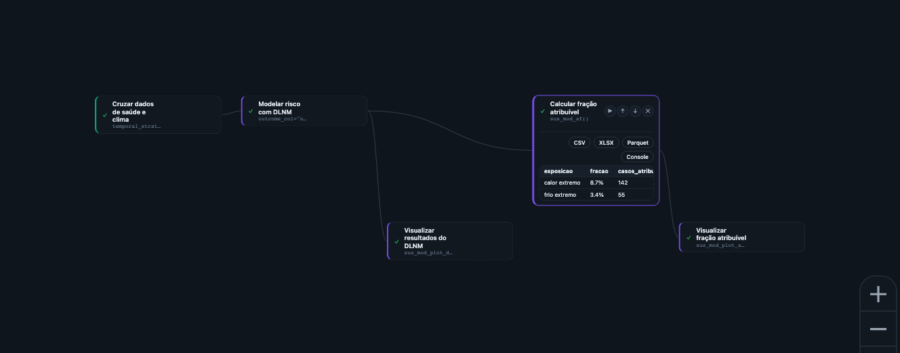

6 Etapa Análise & Modelagem: do padrão observado à evidência estatística
No Capítulo 3 você montou uma série integrada — saúde, clima e, quando relevante, território, lado a lado na mesma linha do tempo. Fechamos aquele capítulo com um aviso importante: essa série é uma comparação, não uma prova. Uma série integrada ajuda a levantar hipótese e comunicar um problema, mas não mostra, isoladamente, se o padrão observado é compatível com um efeito do clima sobre a saúde ou com variação esperada nos dados. Responder a essa pergunta — há evidência de efeito ou apenas variação estatística? — é o trabalho da Etapa Análise & Modelagem.
Este capítulo mantém a régua operacional dos Capítulos 2 e 3: público principal é acadêmico e gestor técnico, quem vai efetivamente ajustar um modelo. Quem quer só entender o panorama pode ler a seção de grupos de Funções e pular direto para o resumo do fim do capítulo.
6.1 Por que a Análise & Modelagem vem depois da Integração
Uma série integrada mostra clima e saúde na mesma linha do tempo — mas séries de saúde têm tendência sazonal própria (mais casos respiratórios no inverno, por exemplo, independentemente do clima daquele ano específico), têm dias da semana com padrões diferentes, e têm ruído aleatório dia a dia. Sem um modelo estatístico que separe esses componentes, é fácil atribuir ao clima um padrão que na verdade é sazonalidade, tendência de longo prazo, ou coincidência de amostra pequena. A Etapa Análise & Modelagem existe para fazer essa separação com método explícito — reportando, dependendo do método, um intervalo de confiança (a faixa plausível de valores do efeito, não um número único), um valor-p ou uma probabilidade posterior (o quanto o padrão observado é compatível com puro acaso). Esses números não são um selo de aprovação: eles ajudam a distinguir um efeito provável de um padrão que pode ser só ruído de amostra pequena — e é isso que torna a estimativa mais bem documentada antes de qualquer decisão de política pública ser tomada com base nela.
6.2 As 32 Funções da Análise & Modelagem, em 6 grupos
A Biblioteca reúne 32 Funções na Etapa Análise & Modelagem — a maior das quatro Etapas — organizadas em seis famílias. Cada uma responde a um tipo diferente de pergunta:
(a) Núcleo temporal (defasagem e desfecho agregado) — a família mais usada para a pergunta “quanto do desfecho de saúde é explicado pelo clima, considerando a defasagem?”.
- Modelar risco com DLNM (
sus_mod_dlnm) — ajusta um Modelo de Defasagem Não Linear Distribuída (DLNM), a Função de referência desta família, descrita em detalhe na próxima seção. - Calcular fração atribuível (
sus_mod_af) — calcula a fração e o número atribuível a partir de um Modelo DLNM já ajustado. - Estimar excesso de óbitos (
sus_mod_excess) — estima excesso de mortalidade/morbidade comparando a série observada com uma linha de base esperada. - Combinar DLNM entre cidades (
sus_mod_pool) — combina estimativas de DLNM de várias cidades em duas etapas (meta-análise), indicado quando o estudo cobre mais de um município. - Explicar diferenças entre cidades (
sus_mod_metaregression) — explica por que o efeito varia entre cidades ao cruzar as estimativas combinadas com covariáveis no nível da cidade (renda, latitude, etc.). - Comparar sensibilidade entre grupos (
sus_mod_sensitivity) — repete a análise em vários subgrupos (por faixa etária, por período) para checar se o resultado se mantém estável. - Visualizações dedicadas: Visualizar resultados do DLNM (
sus_mod_plot_dlnm), Visualizar fração atribuível (sus_mod_plot_af), Visualizar meta-análise de DLNM (sus_mod_plot_pool) e Visualizar análise de sensibilidade (sus_mod_plot_sensitivity).
(b) Desenhos quase-experimentais — alternativas ao DLNM para perguntas mais específicas: o case-crossover serve para exposição aguda com poucos anos de dados, e a série interrompida serve para avaliar se uma intervenção pontual mudou o desfecho.
- Analisar com case-crossover (
sus_mod_casecrossover) — compara cada caso com ele mesmo em dias de controle próximos (mesmo mês, mesmo dia da semana), indicado para exposição aguda com poucos anos de dados. - Avaliar impacto com série interrompida (
sus_mod_its) — série temporal interrompida, avalia se um evento ou intervenção específica (por exemplo, uma política de alerta de onda de calor) mudou o nível ou a tendência do desfecho depois de acontecer.
(c) Espacial — a pergunta muda de “quando” para “onde”: existe aglomerado de casos que não é explicado só pelo acaso?
- Construir vizinhança entre municípios (
sus_mod_spatial_weights) — monta a matriz de vizinhança entre municípios, pré-requisito para todas as demais Funções deste grupo. - Mapear risco com Bayes espacial (CAR/BYM) (
sus_mod_spatial_bayes) — Modelo Bayesiano espacial (CAR/BYM) com covariáveis climáticas; suaviza taxas por município com a informação dos vizinhos. - Testar autocorrelação espacial (Moran) (
sus_mod_spatial_moran) — Moran global e LISA local, detecta autocorrelação espacial e mapeia clusters de alto-alto/baixo-baixo. - Modelar regressão espacial (
sus_mod_spatial_reg) — regressão espacial (SAR/SEM/SDM/SAC) para associações clima-saúde que levam em conta a dependência espacial entre municípios vizinhos. - Detectar clusters de doença (Kulldorff) (
sus_mod_spatial_scan) — estatística de varredura circular de Kulldorff, detecta clusters espaciais de forma mais formal que o Moran local. - Visualizações dedicadas: Mapear risco com Bayes espacial (
sus_mod_plot_spatial_bayes), Visualizar clusters espaciais (Moran) (sus_mod_plot_spatial_moran) e Mapear clusters de Kulldorff (sus_mod_plot_spatial_scan).
(d) Espaço-tempo bayesiano — quando “quando” e “onde” precisam ser respondidos juntos.
- Modelar risco espaço-temporal (Bayes) (
sus_mod_spacetime_bayes) — Modelo Bayesiano hierárquico espaço-temporal com INLA, a versão mais completa (e mais exigente computacionalmente) do catálogo. - Calcular probabilidade de excedência (
sus_mod_spacetime_exceedance) — probabilidades posteriores de exceder um limiar, a partir de um Modelo espaço-tempo já ajustado — aplicado à vigilância (“qual a chance deste município passar do limite este mês?”). - Prever risco futuro no espaço-tempo (
sus_mod_spacetime_predict) — gera predições a partir de um Modelo espaço-tempo ajustado, para municípios ou períodos fora da amostra original. - Mapear risco espaço-temporal (
sus_mod_plot_spacetime) — visualizações dedicadas para os Resultados espaço-tempo.
(e) Aprendizado de máquina — quando o objetivo é prever, não explicar.
- Prever desfechos com machine learning (
sus_mod_ml) — treina um Modelo XGBoost para prever o desfecho de saúde a partir de variáveis climáticas, ambientais e socioeconômicas. - Visualizar modelo de machine learning (
sus_mod_plot_ml) — gráficos de desempenho (erro de predição) e de importância de variáveis do Modelo treinado.
(f) Síntese e triagem para gestão — Funções voltadas à decisão de prioridade pelo gestor público, não à publicação acadêmica.
- Ranquear carga de doença por cidade (
sus_mod_burden) — tabela ranqueada de carga de doença entre cidades ou estratos, ajuda a priorizar onde agir primeiro. - Montar análise SWOT climática (
sus_mod_swot) — Análise SWOT clima-saúde (forças, fraquezas, oportunidades, ameaças) estruturada a partir dos dados do Pipeline. - Calcular índice de vulnerabilidade (IPCC) (
sus_mod_vulnerability_index) — índice composto de vulnerabilidade de 3 pilares do IPCC (exposição, sensibilidade, capacidade adaptativa), sintetiza clima e território num único número por município. - Visualizações dedicadas: Visualizar carga de doença por cidade (
sus_mod_plot_burden), Visualizar análise SWOT (sus_mod_plot_swot) e Visualizar índice de vulnerabilidade (sus_mod_plot_vulnerability).
Se a pergunta é “o clima está causando X, e quanto?” num recorte de tempo (uma cidade, uma série longa), comece pelo núcleo temporal (DLNM). Se você tem poucos anos de dados ou quer avaliar uma intervenção pontual, os desenhos quase-experimentais servem melhor. Se a pergunta é “onde estão os aglomerados?”, vá para o grupo espacial; se precisa das duas perguntas ao mesmo tempo (quando e onde), o espaço-tempo bayesiano é o caminho, mas exige mais dados e mais tempo de Motor. Aprendizado de máquina entra quando o objetivo é prever um valor futuro, não explicar uma relação causal. Síntese/triagem é o ponto de partida quando o gestor público só precisa de um ranking ou um índice para decidir prioridade, sem entrar no detalhe estatístico dos outros grupos.
6.3 Função-chave da Etapa: Modelar risco com DLNM
Modelar risco com DLNM (sus_mod_dlnm) ajusta um Modelo de Defasagem Não Linear Distribuída (DLNM) — o método mais usado na literatura de clima e saúde para responder à pergunta apresentada no Capítulo 0: o efeito de uma variável climática sobre um desfecho de saúde não é instantâneo nem constante, ele se distribui ao longo de vários dias depois da exposição, e essa distribuição pode ter formato não linear (por exemplo, tanto calor extremo quanto frio extremo aumentam o risco, com o meio-termo sendo mais seguro).
O Modelo recebe a série integrada (Capítulo 3) e exige duas decisões centrais, que formalizam estatisticamente a “defasagem” do Capítulo 0:
- A forma da relação exposição-resposta — como o risco muda com o nível da variável climática (por exemplo, uma curva em U para temperatura, em que tanto frio quanto calor aumentam o risco de óbito).
- A forma da relação de defasagem — como o risco se distribui ao longo dos dias depois da exposição (o efeito do calor de hoje pode ser mais forte já amanhã e cair rápido; o efeito do frio costuma se estender por mais dias).
O Resultado de Modelar risco com DLNM (sus_mod_dlnm) já é interpretável sozinho (Função Visualizar resultados do DLNM (sus_mod_plot_dlnm) produz o gráfico tridimensional exposição-defasagem-risco usado na literatura), mas o Resultado que mais importa para gestão pública normalmente vem da Função seguinte, Calcular fração atribuível (sus_mod_af): a partir do Modelo ajustado, ela calcula a fração atribuível populacional — que proporção dos casos observados pode ser atribuída ao clima, dado o Modelo e o cenário de exposição considerado — e o número atribuível — quantos casos isso representa em números absolutos. É essa dupla (fração + número) que transforma uma curva estatística em um argumento de política pública (“X% das internações cardiovasculares de idosos nesta cidade são estimadas como atribuíveis a dias de calor extremo, o equivalente a Y internações por ano”). É uma estimativa populacional, com sua própria margem de incerteza — ela não diz que um caso individual específico foi causado pelo calor, e sim que, em agregado, essa fração dos casos não seria esperada se o cenário de exposição ao calor extremo não tivesse ocorrido.
6.4 Exercício guiado: do calor extremo à fração atribuível
Vamos retomar o arco de doença cardiovascular em idosos e ondas de calor (ec-03-cardio-idosos-calor) aberto no recorte “calor” do Capítulo 0. É um caso frequente de uso do núcleo temporal: efeito agudo, mesmo-dia a poucos dias de defasagem, um único Modelo DLNM já é suficiente para responder à pergunta de gestão. O Modelo de catálogo mod-dlnm traz o esqueleto deste exercício e pode ser carregado no Centro de Pipelines para conferência.


Na Modelagem, os Parâmetros importantes são os que ligam a série integrada ao modelo: outcome_col indica o desfecho, climate_col indica a exposição, lag_max define até quantos dias de defasagem o modelo considera, e as escolhas de curva controlam a forma da relação exposição-resposta. Para gestão, confira também os Parâmetros usados em Calcular fração atribuível, porque eles definem qual faixa de exposição será atribuída ao clima.
6.4.1 Passo a passo
Ponto de partida — a série integrada de saúde × clima montada no Capítulo 3 (óbitos cardiovasculares em idosos × temperatura do ar, agregados por dia).
Ajustar o Modelo — Função Modelar risco com DLNM (
sus_mod_dlnm), comoutcome_colapontando para a coluna de contagem de óbitos. O Resultado inclui a curva exposição-resposta e a estrutura de defasagem já ajustadas.Visualizar a curva — Função Visualizar resultados do DLNM (
sus_mod_plot_dlnm), gráfico tridimensional exposição-defasagem-risco — uma forma visual de mostrar “o risco sobe acima de qual temperatura, e por quantos dias esse efeito persiste”.Calcular o impacto — Função Calcular fração atribuível (
sus_mod_af), a partir do Modelo ajustado, que produz fração e número atribuível ao calor extremo.Comunicar o Resultado — Função Visualizar fração atribuível (
sus_mod_plot_af), Resultado gráfico/tabela pronto para levar a um gestor público sem exigir que ele leia a curva DLNM bruta.
Se o estudo cobrir mais de uma cidade, o próximo Passo depois de Modelar risco com DLNM (sus_mod_dlnm) em cada cidade é Combinar DLNM entre cidades (sus_mod_pool), para combinar as estimativas — e, se o efeito variar muito entre cidades, Explicar diferenças entre cidades (sus_mod_metaregression) ajuda a entender por quê (renda, latitude, acesso a ar-condicionado, por exemplo). O Modelo de catálogo ec-03-cardio-idosos-calor retoma esse cruzamento em um estudo de caso completo, no módulo dedicado aos estudos aplicados.
6.5 Cuidado: um bom Modelo ainda não sai do Studio sozinho
O Resultado de Calcular fração atribuível (sus_mod_af) é uma estimativa estatística com modelo e incerteza explícitos — mais informativa do que a série integrada do Capítulo 3. Ainda assim, não é uma resposta definitiva: a estimativa depende das escolhas feitas no Modelo (quais covariáveis entraram, qual defasagem foi assumida, que outros fatores não foram medidos) e continua sujeita à mesma cautela de sempre — associação, mesmo bem modelada estatisticamente, não é prova de causa isolada; é a melhor explicação que os dados e o Modelo sustentam até que surja evidência que a contradiga. Além disso, o Resultado ainda vive dentro do Pipeline do Studio: para virar um relatório técnico entregável, um artigo submetido a uma revista, ou uma rotina executada todo mês sem que alguém precise reabrir o Studio, falta uma etapa. Essa é a Etapa RAP (Reprodutibilidade, Automação, Publicação): ela transforma esse Resultado em material reprodutível fora da interface visual.
1. Por que uma série integrada (Capítulo 3) não é, isoladamente, prova de que o clima causa o desfecho de saúde?
Porque séries de saúde têm sazonalidade, tendência de longo prazo e ruído próprios, que podem se parecer com um efeito climático sem ser causados por ele; um Modelo estatístico (DLNM ou outro) é necessário para separar esses componentes com intervalo de confiança ou probabilidade posterior.
2. Você tem só 2 anos de dados de um único município e quer avaliar se uma política de alerta de onda de calor reduziu internações depois de implementada. Modelar risco com DLNM (sus_mod_dlnm) é a melhor escolha?
Não. A pergunta é sobre o efeito de uma intervenção pontual num ponto específico do tempo; esse é o uso de Avaliar impacto com série interrompida (sus_mod_its) — ela compara o nível/tendência da série antes e depois da política. Analisar com case-crossover (sus_mod_casecrossover) não resolve essa pergunta: por desenho, ele remove tendências de longo prazo comparando cada caso com dias de controle próximos — o que também elimina qualquer contraste “antes e depois” da política, que é justamente o que se quer medir aqui. O case-crossover é adequado para outra pergunta (associação com exposição aguda de curto prazo), não para avaliar se uma intervenção pontual mudou o desfecho.
3. Qual a diferença entre o grupo espacial, com funções como Mapear risco com Bayes espacial (sus_mod_spatial_bayes) e Detectar clusters de doença (sus_mod_spatial_scan), e o grupo espaço-tempo bayesiano, representado por Modelar risco espaço-temporal (sus_mod_spacetime_bayes)?
O grupo espacial responde “onde estão os aglomerados”, com o território em um único recorte de tempo; o espaço-tempo bayesiano responde “onde e quando”, com as duas dimensões no mesmo Modelo — exige mais dados e mais tempo de Motor, mas é necessário quando o padrão espacial muda ao longo do tempo.